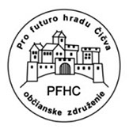

Informácie pre návštevníkov hradu
Vážení návštevníci!
Hrad Čičva je národnou kultúrnou pamiatkou, zapísanou v Ústrednom zozname pamiatkového fondu SR pod číslom 89/1. Je pamiatkovo chránený podľa zákona NR SR č.49/2002 o ochrane pamiatkového fondu v znení neskorších predpisov, preto nepoškodzujte konštrukcie hradu, nerozoberajte murivo a nepoškodzujte zachovalé omietky nápismi a škrabancami. Každé poškodenie je totiž trestné podľa platných zákonov SR a bude ako také hlásené na Polícii SR, s adekvátnymi postihmi podľa zákonov SR.
Aby sme sa všetci mohli ešte dlho tešiť a vychutnávať si naše bohaté kultúrne dedičstvo po našich predkoch v jeho doposiaľ zachovanej kráse, aby sme zostali aj naďalej kultúrnym národom v srdci Európy s bohatou históriou, ktorú si vážime a ktorú chceme aj naďalej v duchu našich kultúrnych slovenských tradícií zachovávať pre budúce pokolenia, vás preto láskavo žiadame:
- Dbajte na svoju vlastnú bezpečnosť a po hradnom areáli sa pohybujte po vyznačených chodníkoch s opatrnosťou a s ohľadom na ostatných návštevníkov. Na hrade totiž nie ste nikdy sami :)
- Nevstupujte na múry, klenby a ostatné konštrukcie mimo vyznačených cestičiek, pretože hrozí uvoľnenie kameňov a následná ďalšia deštrukcia hradných konštrukcií, alebo váš pád do hĺbky spojený s veľmi pravdepodobnou ujmou na zdraví. Taktiež pri pohybe popri hradných múroch dávajte pozor, aby vám nespadol na hlavu kameň.
- Nechytajte sa a neopierajte sa o zábradlie, slúži najmä ako optická bariéra, ktorá má zabrániť priblíženiu sa návštevníkov k nebezpečným miestam a zrázom v hradnom areáli. Hradný areál je archeologickou lokalitou a tým pádom nie je zatiaľ možné vyrobiť dostatočne ukotvené a pevné zábradlie, ktoré by tým nenarušilo podložie a archeologické vrstvy pod terénom. Takže nepristupujte k okrajom vyvýšených plôch a konštrukcií, pretože hrozí váš pád do hĺbky spojený s ozaj veľmi pravdepodobnou ujmou na zdraví.
- Na hrade priebežne prebiehajú stavebné, konzervačné a udržiavacie práce, preto v záujme zachovania vášho vlastného zdravia a predídeniu úrazu vás žiadame, aby ste rešpektovali umiestnené značenie a upozornenia v areáli hradu a jeho okolí, prípadne podľa aktuálnych okolností taktiež pokyny členov združenia a poverených pracovníkov vrámci stavebných prác na hrade. Neberte to ako obmedzovanie, je to naozaj pre vašu bezpečnosť.
- Udržujte poriadok a čistotu v areáli hradu a jeho okolí, svoje odpadky hádžte do smetných košov, ktoré sú na to určené a zreteľne umiestnené. Vizitkou každého inteligentného človeka je to, čo po ňom ostane.
- Nezakladajte oheň vnútri hradieb, v priľahlých priestoroch, ani v poraste v okolí hradu, ale v iba na to vyhradených a vyznačených ohniskách. V súčasnosti sú na hrade dve oficiálne ohniská na dolnom nádvorí určené na opekanie pre návštevníkov, vybavené ekologicky i prakticky riešeným jednoduchým posedením z pníkov a kmeňov zo stromov, ktoré boli na hrade zrezané v minulosti. Drevo na opekanie nájdete vždy pripravené v areáli hradu alebo jeho okolí, ako výsledok činnosti nášho združenia vrámci očisty hradu od náletovej zelene, prípadne si vhodné drevo na "opekačku" môžete nazbierať z okolitého lesného porastu, kde ho je naozaj dostatok.
- Neničte zariadenie turistického vybavenia, posedenie, koše, tabule a ostatné, aby mohli naďalej slúžilť všetkým návštevníkom hradu k príjemnému a oddychovému pobytu na hrade.
POBYT NA HRADE A POHYB PO HRADNOM AREÁLI JE NA VLASTNÚ ZODPOVEDNOSŤ KAŽDÉHO NÁVŠTEVNÍKA !
